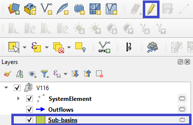
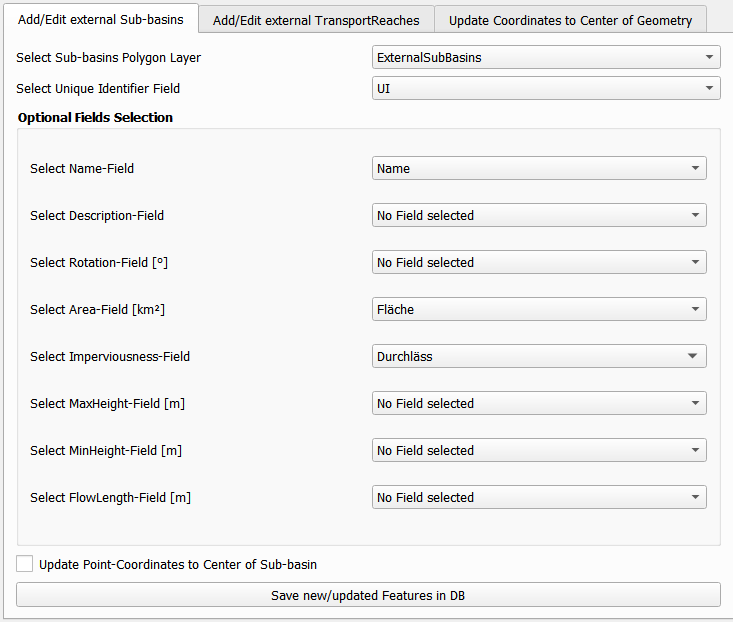
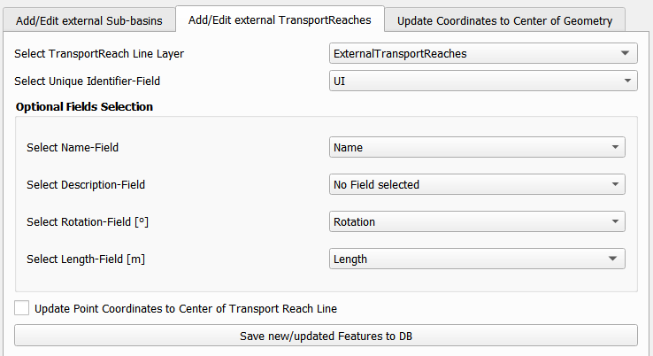
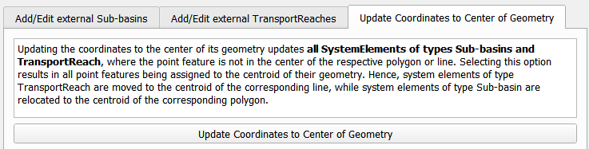

Connect to Talsim DB¶
The second functionality of QTalsim allows users to connect to a Talsim Database, load system elements, sub-basins, outflows and transport reaches. Moreover, users can edit all existing system-elements and the geometries of sub-basins and transport reaches. It is also possible to import sub-basins and transport reaches from external layers.

Connect to Talsim DB¶
The first step involves connecting to a Talsim SQLite Database. By clicking “Select Database,” you can browse and select the Talsim Database. Note that all geometries must be in the CRS WGS84 (EPSG 4326).
The next step requires selecting a scenario from the list and confirming this scenario by clicking “Confirm Scenario and load Layers”. As a result, the System Elements, Outflows, TransportReaches and Sub-basins are added to a layer group (named after the scenario) in the active QGIS-Project. The SystemElement-layer contains all system elements, located based on longitude and latitude attributes. The Sub-basins layer contains the polygons of all sub-basins in the Talsim DB, while TransportReach contains all lines of the TransportReach as defined by the “Geometry”-column. These three layers can be edited. The Outflows- layer depicts the corresponding lines between the system elements and this layer can not be edited.
At any stage, you can click the “Reconnect to DB and Reload Layers” button at the bottom to reconnect to the database, e.g., if you wish to inspect changes.
Edit features of Talsim DB¶
The SystemElement, Sub-basins, and TransportReach layers can be edited by the user. All edits, inserts, and deletions made by the user are saved to the connected Talsim DB. As shown in the screenshot below, the user must select the layer to be edited in the layer group and then click the ‘Toggle Editing’ button to start the editing mode for this layer.
Using the editing options of QGIS, the user is now able to make any changes to the geometries (find further information here) and to the attributes of these three layers.

Edit SystemElement Layer¶
The SystemElement layer is a point layer that holds all SystemElements. Users can insert new elements, delete unwanted ones, or update existing elements. To insert new elements, simply add a new point to the SystemElement layer and then fill in the fields displayed in the prompt. The most critical field to fill in is the ‘Identifier’ field. The first character of the identifier represents the ElementTypeCharacter of the system element (e.g., A for sub-basins). Therefore, it is essential for users to insert the correct ElementTypeCharacter here. The remainder of the ‘Identifier’ field serves as the ElementIdentifier. Please note that the element types cannot be changed by this plugin. Changes of the first character of the ‘Identifier’-field are not saved to the DB. The Id (SystemElementId) is automatically added by the plugin. All other fields are optional and can be left empty (=’NULL’).
Another option is to delete system elements by removing the unwanted point feature.
Users can also edit existing system elements by either modifying the fields in the attribute table or editing the point geometries. Editing the geometries updates the ‘Latitude’ and ‘Longitude’ columns to reflect the location as defined by the user. Please note that it is not possible to change the element type of system elements.
It is important to save changes by clicking the ‘Commit Changes’ button. As a result, newly added features are inserted into the database, edited geometries/attributes of existing features are updated in the database, and deleted features are deleted from the DB. A log message (QTalsim-log) provides details on all updated/inserted/deleted features.
Edit Layers Sub-basins and TransportReach¶
In addition to editing SystemElements directly, it is also possible to edit the geometries of transport reaches (lines) and sub-basins (polygons), as well as their attributes. The plugin offers functionalities to update existing geometries/attributes, delete sub-basins/transport reaches, insert geometries into existing system elements, or add new sub-basin/transport reach elements. The functionality is similar to editing the SystemElement layer.
Inserting new geometries into existing sub-basins/transport reaches, or adding entirely new elements, can be accomplished by simply adding a geometry to the corresponding layer while in editing mode. When confirming the geometry of the new sub-basin, you must enter the identifier of the sub-basin into the ‘Identifier’ field. If this ‘Identifier’ already exists, the geometry is inserted into the existing sub-basin/transport reach element (column geometry). However, if it does not exist, a new element is created (element type = first character of ‘Identifier’ field). Optionally, you can update any other fields shown in the prompt. Only fields where you do not leave null values are updated in the DB. The ‘Geometry’ field is automatically filled with the WKT of the new geometry. Fields ‘Latitude’ and ‘Longitude’ are automatically filled with the coordinates of the sub-basin’s center. Once you have finished editing existing polygons and/or inserting all new sub-basins, it is important to save the edits by clicking the ‘Commit Changes’ button.
Additionally, it is possible to edit existing geometries by simply moving the vertices while in editing mode. In the attribute table, you can again also edit the attributes of the elements.
External Sub-basins Layer¶
An additional feature enables the addition of geometries from an external polygon layer to either insert into existing sub-basins or create new sub-basins in the database. First, you must select a polygon layer from the list. If the layer’s Coordinate Reference System (CRS) differs from WGS84, it is reprojected to EPSG-code 4326. The layer must include a unique identifier field combining the ‘ElementTypeCharacter’ and the ‘ElementIdentifier’ (e.g., AA001 for a sub-basin). After selecting the unique identifier field from the list, you may optionally choose other fields that contain various attributes of the sub-basins.
When these fields are selected, their content is added to the corresponding fields in the database. Another option for updating existing features involves updating the point coordinates (columns ‘Latitude’ and ‘Longitude’) to align with the center of the geometry, which can be done by selecting the appropriate checkbox.
By clicking ‘Save New/Updated Features in DB,’ all new or updated features with changes in their geometries are saved to the database. Information about these updates and insertions is logged in the QTalsim-log.

External TransportReaches Layer¶
Similarly to inserting external sub-basins, the plugin provides functionality to insert transport reach geometries using the corresponding window-tab. The user selects a line layer containing the transport reaches to be imported from the list of external layers. If required, this layer is reprojected to EPSG 4326. The user can then map input fields to Talsim fields.
By clicking ‘Save New/Updated Features in DB,’ all new features or features with updated geometries are saved to the database. Once more, information about the updated/inserted features is logged in the QTalsim-log.

Update Coordinates to Center of Geometry¶
Another provided feature is the option to update the coordinates of all features that have a geometry (line/polygon) to the center of their respective geometries. This functionality is accessed by clicking the button labeled “Optional: Update Coordinates to Center of Sub-basins.” Upon clicking this button, the plugin calculates the centroid of the geometries and updates all coordinates (columns ‘Latitude’ and ‘Longitude’) with the coordinates of the centroid.
